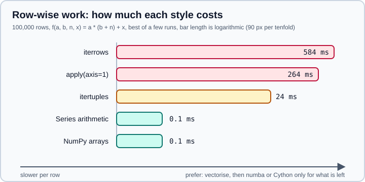

Enhancing Performance
|
This content was generated with the assistance of AI and should be verified against the official documentation before being relied on in production. |
This page targets pandas 3.1 on Python 3.13 or 3.14 with NumPy 2.5, and was checked in October 2026. Every example was run on pandas 3.1.0 with numba 0.68, numexpr 2.14 and Cython 3.3 on one Apple-silicon laptop. Timings are given to show relative size, not as benchmarks: they depend on the CPU, the data and the library versions, so re-measure on your own machine.
The official Enhancing performance guide covers three tools: Cython, numba and pandas.eval. This page adds what comes before them, which is where nearly all the speed is: not looping over rows. For memory, which is a different problem, see Scaling to Large Datasets. The settings that influence speed are explained on Options & Settings.
Measure before you change anything
Most slow pandas code is slow in one or two places, and the guess is often wrong. Time the whole step first, then profile it, and only then rewrite the hot part.
import timeit
import numpy as np
import pandas as pd
s = pd.Series(np.random.default_rng(0).normal(size=1_000_000))
best = min(timeit.repeat(lambda: (s * 2).sum(), number=10, repeat=5)) / 10
print(f"best of 5: {best * 1000:.2f} ms")Output:
best of 5: 0.33 ms
Source: timeit in the Python documentation.
Take the minimum of several repeats, not the mean: slower runs mostly measure other work on the machine. In a notebook, %timeit does the repetition for you. To see which call inside a longer step dominates, run it under cProfile:
import cProfile
import pstats
import numpy as np
import pandas as pd
df = pd.DataFrame(np.random.default_rng(0).normal(size=(20_000, 3)), columns=list("abc"))
def pipeline():
out = df.apply(lambda r: r["a"] + r["b"], axis=1)
return out * df["c"]
profiler = cProfile.Profile()
profiler.enable()
pipeline()
profiler.disable()
pstats.Stats(profiler).sort_stats("cumulative").print_stats(5)Source: The Python profilers. The profile of this example is dominated by the row-wise apply, which is the subject of the next section. The first-call cost of compiled code (numba, below) is a separate trap: always time the second call.
The performance ladder
pandas stores each column as one typed array. Operations on a whole column run in compiled code over that array. Operations that visit one row at a time build a Python object per row and call Python code per row. The rungs below show the same computation, a * (b + n) + x, on 100,000 rows.
import time
import numpy as np
import pandas as pd
rng = np.random.default_rng(42)
n = 100_000
df = pd.DataFrame({
"a": rng.normal(size=n),
"b": rng.normal(size=n),
"N": rng.integers(1, 100, size=n),
"x": rng.uniform(size=n),
})
def f(a, b, n, x):
return a * (b + n) + x
def best_ms(label, fn, repeat=3):
times = []
for _ in range(repeat):
t0 = time.perf_counter()
fn()
times.append(time.perf_counter() - t0)
print(f"{label:<26}{min(times) * 1000:9.1f} ms")
best_ms("iterrows", lambda: [f(r["a"], r["b"], r["N"], r["x"]) for _, r in df.iterrows()], repeat=1)
best_ms("apply(axis=1)", lambda: df.apply(lambda r: f(r["a"], r["b"], r["N"], r["x"]), axis=1), repeat=1)
best_ms("itertuples", lambda: [f(r.a, r.b, r.N, r.x) for r in df.itertuples()])
best_ms("Series arithmetic", lambda: f(df["a"], df["b"], df["N"], df["x"]))
best_ms("NumPy arrays", lambda: f(*(df[c].to_numpy() for c in ["a", "b", "N", "x"])))Output on the test machine:
iterrows 583.6 ms apply(axis=1) 263.6 ms itertuples 23.6 ms Series arithmetic 0.1 ms NumPy arrays 0.1 ms
Source: the comparison between row loops and vectorised code follows the guidance in Enhancing performance and the iteration notes in Essential basic functionality.

Read the figure from top to bottom as "what you pay for convenience":
-
iterrowsbuilds a wholeSeriesfor each row. Because a row mixes columns, pandas picks a common dtype for it, so integer columns can come out as a different type than they went in. Withidas an integer column andnameas text,iterrowsreturned the id as a Pythonintbut a row of dtypeobject, while mixing integer and float columns would turn the integers into floats.itertupleskeeps each column’s value and is far faster, but it still runs Python code once per row. -
apply(axis=1)also creates aSeriesper row. It looks like a vectorised call, but it is a hidden loop. -
Whole-column arithmetic is two to three orders of magnitude faster, and it is as fast as raw NumPy because pandas delegates to it.
The rule that follows is simple. If you write for over rows, or apply with axis=1, ask first whether the same result can be written with column operations. Often it can.
Vectorising a conditional
The most common loop in disguise is a per-row if. np.where, Series.where, Series.mask, np.select and pd.cut express it over whole columns.
import time
import numpy as np
import pandas as pd
rng = np.random.default_rng(0)
df = pd.DataFrame({"score": rng.integers(0, 100, size=500_000)})
def clock(label, fn):
t0 = time.perf_counter()
out = fn()
print(f"{label:<26}{(time.perf_counter() - t0) * 1000:9.1f} ms")
return out
def bonus(x):
return x * 1.1 if x >= 70 else x
slow = clock("Series.apply(function)", lambda: df["score"].apply(bonus))
fast = clock("np.where", lambda: np.where(df["score"] >= 70, df["score"] * 1.1, df["score"]))
mixed = clock("Series.where / mask", lambda: df["score"].mask(df["score"] >= 70, df["score"] * 1.1))
print(np.allclose(slow, fast), np.allclose(slow, mixed))Output:
Series.apply(function) 32.6 ms np.where 0.7 ms Series.where / mask 1.2 ms True True
Source: The where method and masking and numpy.where.
Notice the last line: check that the fast version gives the same answer as the slow one before you replace it. For text results the gap is smaller than for arithmetic, because string work dominates, so measure before assuming a speed-up.
Do not grow a frame in a loop
Adding a row at a time is the second classic slowdown. DataFrame.append and Series.append were removed in pandas 2.0, and older tutorials that call them fail with AttributeError. The replacement is to collect plain Python objects in a list and build the frame once.
import time
import pandas as pd
rows = [{"i": i, "sq": i * i} for i in range(3000)]
def clock(label, fn):
t0 = time.perf_counter()
fn()
print(f"{label:<28}{(time.perf_counter() - t0) * 1000:8.1f} ms")
def grow_with_loc():
out = pd.DataFrame(columns=["i", "sq"])
for r in rows:
out.loc[len(out)] = r
return out
def grow_with_concat():
out = pd.DataFrame({"i": [], "sq": []})
for r in rows:
out = pd.concat([out, pd.DataFrame([r])], ignore_index=True)
return out
clock("DataFrame(list of dicts)", lambda: pd.DataFrame(rows))
clock("loc[len(df)] in a loop", grow_with_loc)
clock("concat inside the loop", grow_with_concat)Output:
DataFrame(list of dicts) 0.6 ms loc[len(df)] in a loop 458.7 ms concat inside the loop 147.1 ms
Source: Concatenating objects. See also Concatenation.
Every concat copies all the data so far, so a loop of N steps copies on the order of N squared elements. Build a list, then call pd.DataFrame(rows) or one pd.concat(list_of_frames) at the end.
Choose the right dtypes first
Several speed problems are really dtype problems. A column of numbers stored as object runs Python-level arithmetic. A column of low-cardinality text stored as str can be a category, which makes comparisons and group-bys work on integer codes. Datetimes parsed once and kept as datetime64 are far cheaper than strings parsed on every use. The str dtype is the default for text since pandas 3.0 and is faster and smaller than object strings. Read Data Types Overview and Categorical Data, and the memory numbers on Scaling to Large Datasets.
When the vectorised form does not exist
Some computations are inherently sequential: a rolling window with a custom function, an exponentially weighted recursion, a state machine over rows, a simulation. After you have removed every avoidable loop, three tools remain. The next sections follow the order in the official guide, but in practice try numba before Cython, since it needs no build step.
Source: decision flow drawn for this page from Enhancing performance.
Numba
Numba compiles numerical Python functions to machine code the first time they are called. pandas uses it in two ways, and the official guide notes that numba works best on numerical code over NumPy arrays.
The engine option on built-in methods
Rolling.apply, Expanding.apply, Window reductions, DataFrame.apply, groupby(...).agg, transform and a few others accept engine="numba". You keep writing a normal Python function; pandas compiles it and runs the loop in compiled code.
import time
import numpy as np
import pandas as pd
rng = np.random.default_rng(1)
n = 1_000_000
s = pd.Series(rng.normal(size=n))
g = pd.DataFrame({"k": rng.integers(0, 1000, size=n), "v": rng.normal(size=n)})
def clock(label, fn):
t0 = time.perf_counter()
out = fn()
print(f"{label:<36}{(time.perf_counter() - t0) * 1000:9.1f} ms")
return out
def mean_abs_dev(values): # receives a NumPy array because raw=True
return np.abs(values - values.mean()).mean()
def group_mean(values, index): # the numba engine for groupby needs (values, index)
return np.mean(values)
for run in (1, 2):
clock(f"rolling.apply, default engine (run {run})", lambda: s.rolling(100).apply(mean_abs_dev, raw=True))
for run in (1, 2):
clock(f"rolling.apply, numba engine (run {run})", lambda: s.rolling(100).apply(mean_abs_dev, raw=True, engine="numba"))
for run in (1, 2):
clock(f"groupby.agg, numba engine (run {run})", lambda: g.groupby("k")["v"].agg(group_mean, engine="numba"))
clock("groupby.mean, built in", lambda: g.groupby("k")["v"].mean())
try:
s.rolling(10).apply(mean_abs_dev, raw=False, engine="numba")
except ValueError as exc:
print("ValueError:", exc)Output:
rolling.apply, default engine (run 1) 1754.8 ms rolling.apply, default engine (run 2) 1793.8 ms rolling.apply, numba engine (run 1) 488.5 ms rolling.apply, numba engine (run 2) 145.6 ms groupby.agg, numba engine (run 1) 94.7 ms groupby.agg, numba engine (run 2) 8.5 ms groupby.mean, built in 3.5 ms ValueError: raw must be `True` when using the numba engine
What the run shows:
-
The first call includes compilation (489 ms against 146 ms for the second). pandas caches the compiled function for the lifetime of the process, so later calls with the same function are fast. In a short script that runs once, the compile time can cost more than it saves.
-
The default engine ran the Python function once per window, which is why it took 1.8 s. The numba engine fused the loop and the function.
-
The built-in
meanof a group-by took 3.5 ms, faster than any custom function. Use the engine option only for logic that has no built-in method. -
The function is restricted: a rolling function must be called with
raw=Trueso that it receives a NumPy array, and a groupby function takes(values, index). Code that numba cannot compile (arbitrary Python objects, many third-party calls) fails at compile time or falls back to object mode, which gives no speed-up.
The official guide says the numba engine is generally worthwhile from about a million data points, and that for small data the JIT overhead can outweigh the gain. The same guide shows engine_kwargs, a dictionary forwarded to the numba decorator, with the keys nopython, nogil and parallel. Passing {"parallel": True} lets numba use several threads, but pandas parallelises over columns, so it mostly helps frames with many columns. The guide also warns that parallel=True can abort the process if the numba threading layer is not thread-safe in your environment, so select a safe threading layer first, as described in the numba documentation.
To make the numba engine the default for every method that supports it, set compute.use_numba; the option is False by default. That is a global behaviour change, so prefer the explicit engine="numba" argument in code you share.
Calling your own numba function
The second pattern skips the pandas engine option: decorate a function with numba.njit, hand it arrays from to_numpy(), and assign the result back.
import numba
import numpy as np
import pandas as pd
@numba.njit
def integrate(a, b, steps):
dx = (b - a) / steps
total = 0.0
for i in range(steps):
x = a + i * dx
total += x * x - x
return total * dx
@numba.njit
def row_wise(a, b):
out = np.empty(a.shape[0])
for i in range(a.shape[0]):
out[i] = integrate(a[i], b[i], 1_000_000)
return out
df = pd.DataFrame({"a": [0.0, 1.0, 2.0], "b": [1.0, 2.0, 5.0]})
df["area"] = row_wise(df["a"].to_numpy(), df["b"].to_numpy())
print(df)Output:
a b area 0 0.0 1.0 -0.166667 1 1.0 2.0 0.833332 2 2.0 5.0 28.499973
Source: Numba (JIT compilation) and the numba 5 minute guide.
Inside a numba function there is no pandas: pass arrays in, return arrays out, and build the Series or DataFrame outside. A numba function that receives a Series falls back to slow object mode or fails to compile. In pandas 3 to_numpy() may return a read-only view of the column (Copy-on-Write), so a numba function must not write into its input, which is another reason to allocate the output array inside the function as shown.
Cython
Cython translates typed Python-like code to C. It gives the same order of speed-up as numba for numeric loops, with more work: a build step, a compiler on every machine that installs the code, and type declarations. Use it when you are shipping a library, or when numba cannot express the algorithm. The official guide’s progression is: untyped Cython is only about a third faster than Python, typed variables give roughly ten times, passing arrays instead of Series gives another ten times, and disabling bounds checking squeezes out a little more.
A minimal extension module that sums squares over a typed memoryview:
# f.pyx
# cython: language_level=3
cimport cython
@cython.boundscheck(False)
@cython.wraparound(False)
def sum_squares(const double[:] values):
cdef Py_ssize_t i
cdef double total = 0.0
for i in range(values.shape[0]):
total += values[i] * values[i]
return total# setup.py
from setuptools import setup
from Cython.Build import cythonize
setup(ext_modules=cythonize("f.pyx"))python -m pip install cython setuptools
python setup.py build_ext --inplaceimport time
import numpy as np
import pandas as pd
from f import sum_squares
s = pd.Series(np.random.default_rng(0).normal(size=5_000_000))
arr = s.to_numpy()
def py_sum_squares(values):
total = 0.0
for v in values:
total += v * v
return total
for label, fn in [
("pure Python loop", lambda: py_sum_squares(arr)),
("Cython typed memoryview", lambda: sum_squares(arr)),
("vectorised", lambda: float((s * s).sum())),
]:
t0 = time.perf_counter()
result = fn()
print(f"{label:<26}{(time.perf_counter() - t0) * 1000:9.1f} ms {result:.3f}")Output:
pure Python loop 217.5 ms 4998900.148 Cython typed memoryview 3.9 ms 4998900.148 vectorised 2.8 ms 4998900.148
Source: Cython (writing C extensions for pandas) and the Cython memoryview guide.
The lesson is in the last line: the vectorised expression is as fast as the compiled loop and needs no build step. Cython and numba are for loops that cannot be vectorised. The two decorators boundscheck(False) and wraparound(False) remove index checks. The official guide warns that an out-of-range index then reads or writes arbitrary memory and can crash the interpreter instead of raising IndexError, so enable them only after the code is correct.
eval and query
pd.eval, DataFrame.eval and DataFrame.query evaluate an expression written as a string. With the optional numexpr library installed (the default engine when it is importable), the whole expression is evaluated in one pass over chunks that fit in cache, without allocating a temporary array for each operation.
import time
import numpy as np
import pandas as pd
rng = np.random.default_rng(0)
for n in (1_000, 10_000, 100_000, 1_000_000):
df = pd.DataFrame(rng.normal(size=(n, 4)), columns=list("abcd"))
def t(fn, repeat=20 if n < 1_000_000 else 5):
ts = []
for _ in range(repeat):
t0 = time.perf_counter()
fn()
ts.append(time.perf_counter() - t0)
return min(ts) * 1000
plain = t(lambda: df["a"] * df["b"] + df["c"] * df["d"] - df["a"] ** 2)
ev = t(lambda: df.eval("a * b + c * d - a ** 2"))
print(f"{n:>9,} rows plain {plain:8.3f} ms eval {ev:8.3f} ms")Output:
1,000 rows plain 0.060 ms eval 0.308 ms 10,000 rows plain 0.071 ms eval 0.361 ms 100,000 rows plain 0.153 ms eval 0.467 ms 1,000,000 rows plain 1.034 ms eval 1.569 ms
Source: Expression evaluation via eval.
For this short expression, plain arithmetic won at every size, even at a million rows. The official guide says the same: use eval only above roughly 100,000 rows and for expressions with many operations, and for a single operation plain Python is faster at any size because eval adds parsing and compilation cost. With a longer expression on a larger frame the picture changes:
import time
import numpy as np
import pandas as pd
rng = np.random.default_rng(0)
n = 5_000_000
df = pd.DataFrame(rng.normal(size=(n, 4)), columns=list("abcd"))
expr = "(a + b) * (c - d) + a * b * c * d - (a ** 2 + b ** 2) / (1 + c ** 2 + d ** 2)"
def best(fn, repeat=3):
ts = []
for _ in range(repeat):
t0 = time.perf_counter()
fn()
ts.append(time.perf_counter() - t0)
return min(ts) * 1000
a, b, c, d = (df[k] for k in "abcd")
plain = best(lambda: (a + b) * (c - d) + a * b * c * d - (a ** 2 + b ** 2) / (1 + c ** 2 + d ** 2))
fast = best(lambda: df.eval(expr))
with pd.option_context("compute.use_numexpr", False):
slow = best(lambda: df.eval(expr, engine="python"))
print(f"{n:,} rows: plain {plain:.0f} ms, eval(numexpr) {fast:.0f} ms, eval(python) {slow:.0f} ms")
print(np.allclose(df.eval(expr), (a + b) * (c - d) + a * b * c * d - (a ** 2 + b ** 2) / (1 + c ** 2 + d ** 2)))Output:
5,000,000 rows: plain 46 ms, eval(numexpr) 9 ms, eval(python) 21 ms True
Source: Expression evaluation via eval.
Here eval with numexpr was about five times faster than the equivalent plain code. The engine="python" setting, which the guide describes as for testing only, shows how much of the gain comes from numexpr.
Syntax, local variables and assignment
import numpy as np
import pandas as pd
rng = np.random.default_rng(0)
df = pd.DataFrame(rng.normal(size=(1_000_000, 4)), columns=list("abcd"))
thr = 0.5
print(len(df.query("a > @thr"))) # @ reads a local Python variable
df2 = df.eval("e = a + b") # returns a copy with a new column
print(df2.columns.tolist(), df.columns.tolist())
by_mask = df[(df["a"] > 0) & (df["b"] < 0)]
by_query = df.query("a > 0 and b < 0") # the pandas parser lets you write and / or
print(by_mask.equals(by_query))Output:
308596 ['a', 'b', 'c', 'd', 'e'] ['a', 'b', 'c', 'd'] True
Source: Local variables and DataFrame.query.
Points about the syntax, from the official guide:
-
Arithmetic (except the shift operators), comparisons, boolean operators, attribute and subscript access, and math functions such as
sin,exp,logandsqrtare supported. Arbitrary function calls,lambda, comprehensions and statements are not. -
A local variable is written with a leading
@insideDataFrame.queryandDataFrame.eval. Using@in the top-levelpd.evalraisesSyntaxError; refer to the variable by name there. -
The default
parser="pandas"gives&and|the same precedence asandandor, so parentheses can be omitted. Thepythonparser follows strict Python rules. -
Assignment inside
DataFrame.evalreturns a new frame. The original is not modified. This also meansinplace=Trueis deprecated onevalandqueryin pandas 3.1; reassign the result instead. -
Expressions on
objectcolumns and datetime operations involvingNaTrun in Python, with only the numeric sub-expressions going through numexpr.
Optional dependencies
The speed-ups above need packages that pandas does not install by default. pandas provides a performance extra:
python -m pip install "pandas[performance]"According to the pandas 3.1.0 package metadata, that extra installs bottleneck (1.5.0 or newer), numba (0.61.2 or newer) and numexpr (2.11.0 or newer, except 2.14.1). Bottleneck accelerates some reductions and is controlled by compute.use_bottleneck; numexpr is controlled by compute.use_numexpr. Pin versions in your lock file, as described in Lock Files and Reproducible Installs, because numba releases lag behind new NumPy releases.
Other levers
-
Threads. In pandas 3.1 the C parser of
read_csvcan read large files in parallel.mode.max_threadslimits the number of threads. See Options & Settings. -
Columns and rows. Select only the columns you need before expensive steps, and filter rows early. See Scaling to Large Datasets.
-
Copies. Copy-on-Write makes most slices lazy, so a copy happens when you write. Avoid assigning into slices in loops. See Copy-on-Write.
-
Another engine. When a pipeline is bound by joins or group-bys over data larger than memory, Polars or DuckDB may fit better than tuning pandas. See Beyond the Core.
Outdated advice you may still meet
| Statement in older books and tutorials | Date | State in pandas 3.1 |
|---|---|---|
Call |
Removed in pandas 2.0 (2023) |
Raises |
|
Never true |
It runs Python once per row. Use column operations, and |
|
Always an oversimplification |
Faster only for large frames and long expressions, with numexpr. Slower for small data and short expressions. |
|
Pre-3.1 style |
Deprecated on |
Set |
Pre-3.0 tutorials |
The option has no effect since 3.0, and chained assignment no longer works at all. |
Comparisons that treat an |
Pre-3.0 tutorials |
Text is the |
See What’s New in 3.x & Migrating for the full list.
Checklist
-
Measure the step and find the line that dominates.
-
Replace row loops and
apply(axis=1)with column operations,np.where,mask,cutor a group-by. -
Build frames from lists, not by growing them in a loop.
-
Fix dtypes: numeric not
object, category for repeated text, parsed datetimes. -
For an irreducible numeric loop, try
engine="numba"or annjitfunction on arrays, and time the second call. -
Use
evalorqueryonly for long expressions on large frames, and check the result is equal. -
Re-run the timing and confirm the result is unchanged with
equalsornp.allclose.